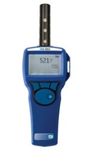
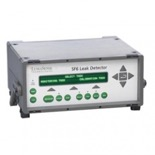
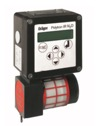

| 示踪气体种类 | 二氧化碳 | 六氟化硫 | 一氧化二氮 |
| 仪器工作原理 | NDIR CO2 传感器 | 光声光谱(PAS)技术 | 红外传感技术 |
| 测量范围 | 0-500ppm | 5 - 50,000 ppb (50 ppm) Standard; 1 - 4,000 ppm Optional |
0 - 300 ppm 0 - 1000 ppm |
| 测量精度 | max(±3.0%，±50 ppm) | ±1% | 暂无 |
| 工作环境限制条件 | 5 - 45°C | 5 to 40°C; | – 20 至 + 65 °C |
功能：示踪气体测试仪器用于调研室内空气品质，主要用于测量空气龄和系统漏风情况。
空气龄测试基本原理：首先, 将房间密闭, 释放示踪气体;当房间中示踪气体的浓度达到平衡状态(约100 ×10-6)后, 停止释放示踪气体;此时, 开始送风, 并打开排风口, 同时记录测量点处示踪气体浓度随时间的变化情况, 从而计算出测点处的空气龄值。
测量对象：示踪气体浓度。